Este grande salto tecnológico substituiu a produção manual pela força mecânica, graças às primeiras máquinas a vapor. A Revolução Industrial começou no Reino Unido e impulsionou, principalmente, a indústria têxtil, gerando um crescimento econômico e de produtividade nunca visto antes.
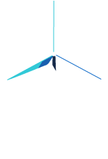
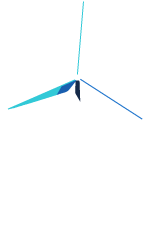
 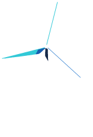
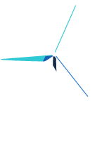
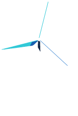
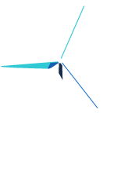
 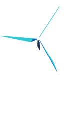
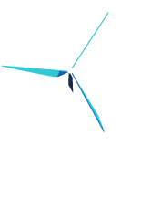
 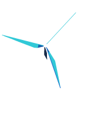
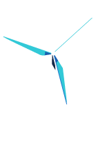
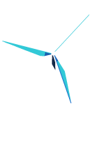
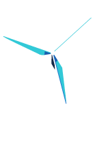
 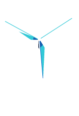
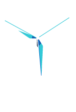
 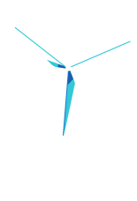
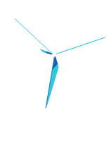
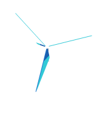
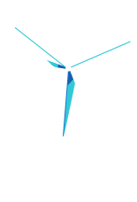
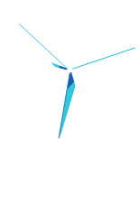
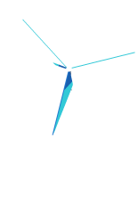
 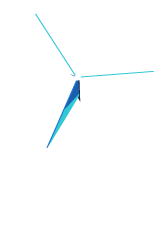
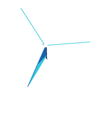

 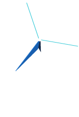
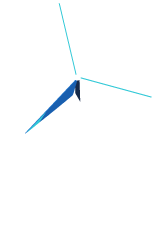
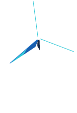
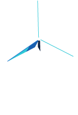
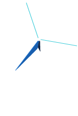
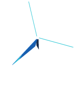
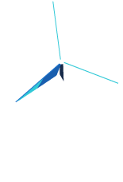
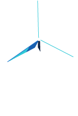

 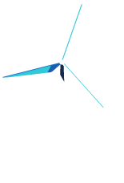
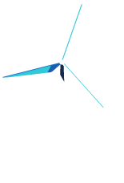


 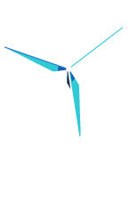
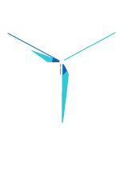
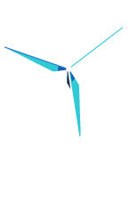
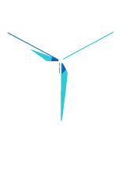


 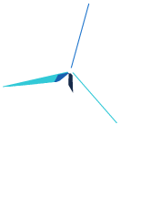
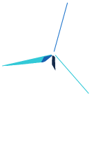

 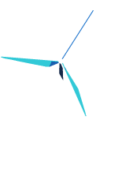
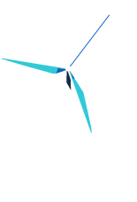
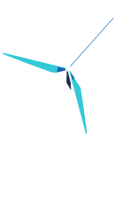
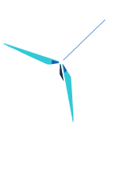
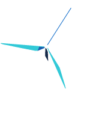
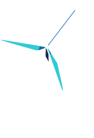
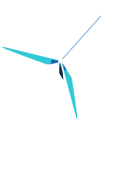
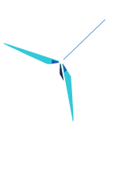


 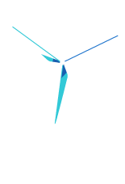
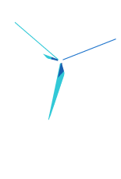
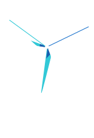
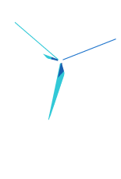
 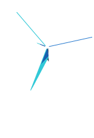
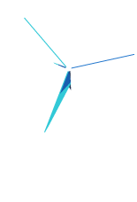
 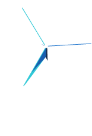
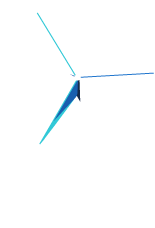
 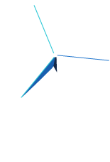
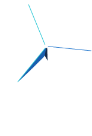

 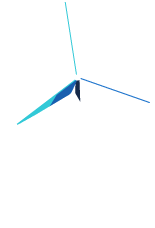
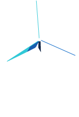
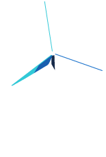
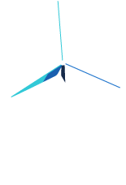
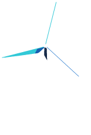
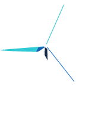
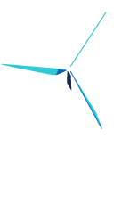
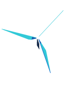
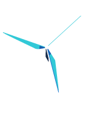
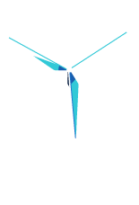
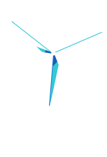
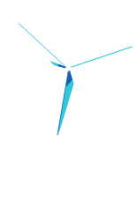
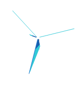
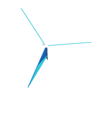
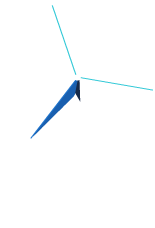
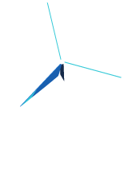
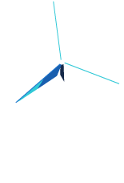
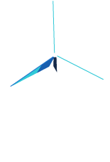
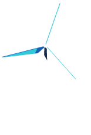
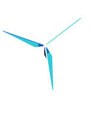
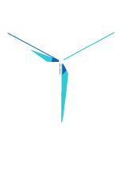
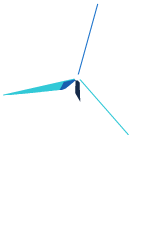
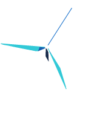
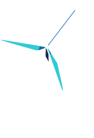
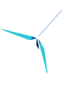
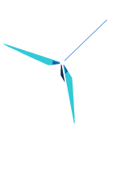
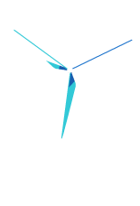
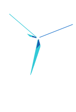
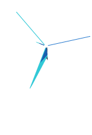
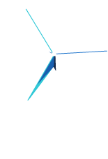
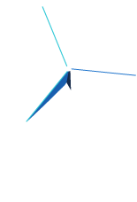
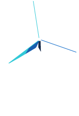
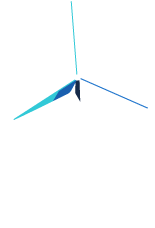
0
Como a colaboração entre mentes e máquinas está tornando as indústrias mais eficientes
A inovação sempre foi o ingrediente mais poderoso para nos ajudar a produzir mais, usando menos recursos. Cada revolução tecnológica teve um grande impacto na maneira em que vivemos, transformando a economia, criando empregos, ajudando a nos comunicar melhor e aumentando nossa qualidade de vida.
Agora, estamos entrando em uma nova revolução. A tecnologia está impulsionando, mais uma vez, a produtividade do setor industrial. A indústria digital está permitindo que máquinas sejam capazes de enxergar, ouvir, sentir e enviar dados pela internet em tempo real, para que sejam operadas de maneira muito mais eficiente.
Em 2020, estima-se que 50 bilhões de dispositivos estarão conectados à Internet
A Internet Industrial tem o potencial de desencadear uma nova onda de inovação, explorando os limites entre mentes e máquinas, otimizando não apenas a indústria em si, mas todos os aspectos de nossas vidas.


 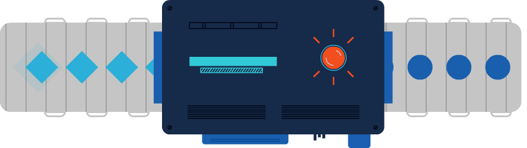
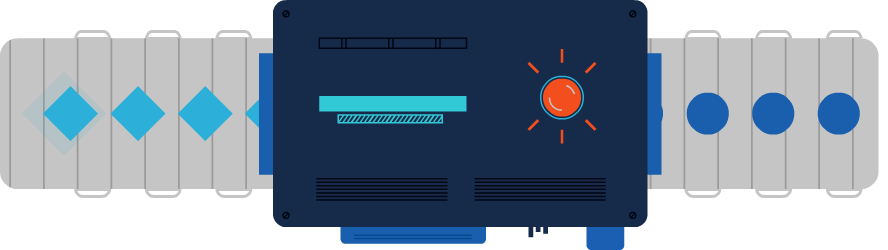


 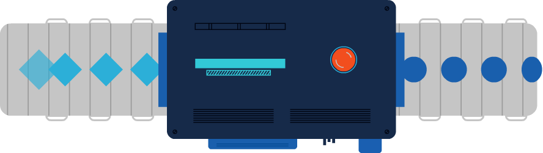
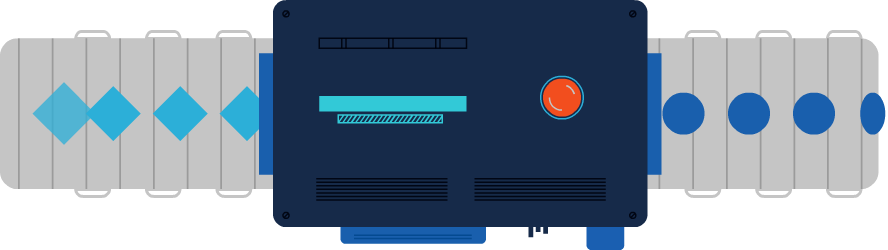
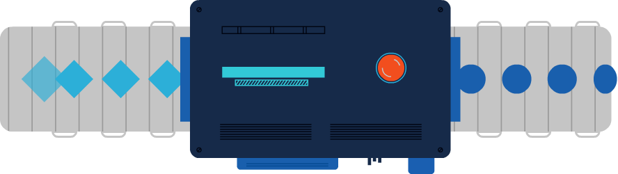
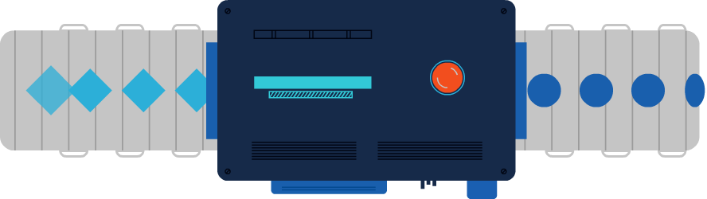

 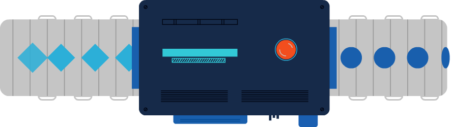
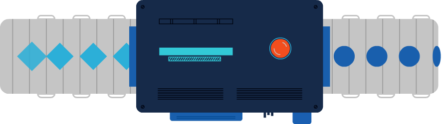

 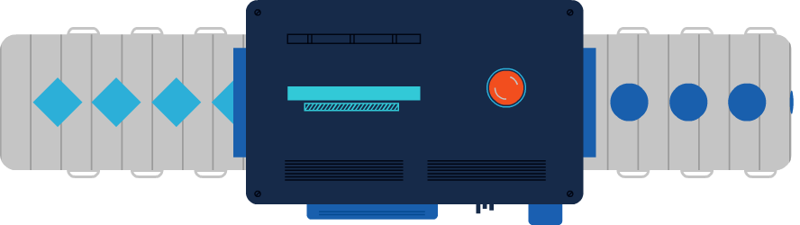
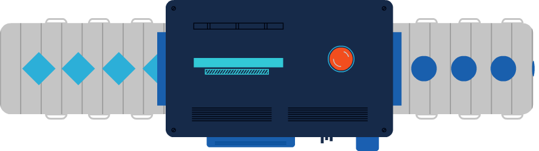
Revoluções Industriais
A transformação da tecnologia impulsiona a produtividade e traz crescimento econômico
Durante boa parte da história da humanidade, o padrão de vida e o crescimento da produtividade transformaram-se de maneira extremamente lenta. Até que, 200 anos atrás, um grande salto tecnológico substituiu pessoas e animais por força mecânica, graças às primeiras máquinas a vapor. A Revolução Industrial se desdobrou em ondas, que foram acontecendo em períodos cada vez mais curtos. A segunda onda trouxe motores de combustão interna, carros, aviões, telégrafo, telefone e, principalmente, a eletricidade.
A Revolução Industrial transformou nossas vidas e impulsionou a produtividade e o crescimento econômico. O faturamento per capita em economias do Ocidente demorou 800 anos para dobrar até o início do século 19. Nos 150 anos seguintes, esse faturamento cresceu 13 vezes.
Na década de 1970, o crescimento da produtividade se estabilizou, desacelerando a economia. Veio, então, a terceira onda, com a expansão da computação e da internet global, que transformaram a maneira como fazemos negócios, consumimos conteúdo e nos comunicamos com outras pessoas. E com ela veio um novo salto em produtividade.
Os avanços tecnológicos permitiram que companhias surgidas do nada se tornassem bilionárias em um curto espaço de tempo, como o Facebook, que foi de zero a uma receita de quase US$ 2 bilhões em menos de 6 anos.
A revolução dos dados transformou a economia, mas, por volta de 2005, os ganhos de produtividade se estabilizaram novamente. Porém, a contínua evolução da tecnologia segue criando novas oportunidades.
“Hoje, a grande tendência é a Internet das Coisas. A Internet Industrial é a Internet das Coisas aplicada a equipamentos industriais”
Marcelo Blois,
líder de Software & Analytics do Centro de Pesquisas
Global da GE, no Rio de Janeiro.
Internet das coisas
Desde que foram inventados, os computadores sempre foram dependentes dos humanos para receberem informações. Pessoas digitam textos, compartilham fotos e escaneiam códigos de barras, que alimentam os computadores e a internet. O problema é que os seres humanos são ótimos para terem novas ideias, mas não são eficientes para capturarem dados de coisas físicas, como equipamentos e máquinas. Para resolver isto, foi criada a Internet das Coisas, termo cunhado pelo empreendedor britânico Kevin Ashton, em 1999, para descrever dispositivos físicos conectados à internet, coletando dados sem a necessidade de ajuda humana.
Nos últimos anos, a Internet das Coisas permitiu que dispositivos tão distintos quanto automóveis ou monitores cardíacos se conectem à internet. Agora, a Internet Industrial permite que fábricas, trens e plataformas de petróleo também estejam conectados, enviando dados em tempo real e permitindo que pessoas consigam aprender melhor como eles funcionam, evitando desperdício de recursos e tornando as indústrias mais eficientes.
O casamento entre mentes e máquinas está trazendo a quarta onda da Revolução Industrial, com o potencial de transformar, mais uma vez, a indústria global.

Internet Industrial
Máquinas inteligentes estão tornando as indústrias mais eficientes
Em 2015, cerca de 5 bilhões de aparelhos estavam conectados à internet. Segundo a PriceWaterhouseCoopers, 2.5 quintilhões de bytes são criados diariamente, sendo que 90% dos dados disponíveis no mundo foram criados nos últimos 2 anos. Nos próximos anos, a indústria irá se transformar, o que significa que, em 2020, 50 bilhões de dispositivos eletrônicos estarão conectados – um crescimento de 10 vezes em apenas 5 anos.
Mas por que as iniciativas da Internet Industrial começaram a acelerar somente nos últimos anos, se já estamos há algumas décadas na era da informação digital? Porque as tecnologias essenciais para a viabilização da Internet Industrial se tornaram acessíveis.
“Antigamente era mais difícil colocar estes sensores nas máquinas, até por conta do grau de miniaturização, avanço tecnológico e custo”
Marcelo Blois
Um dos fatores-chave - e talvez o mais importante - está ligado à redução do preço dos sensores, dispositivos fundamentais para que as máquinas consigam coletar dados como, por exemplo, a temperatura, pressão ou vibração. Estes são alguns dados que indicam se um equipamento está operando no topo da sua produtividade ou se ele está prestes a quebrar.
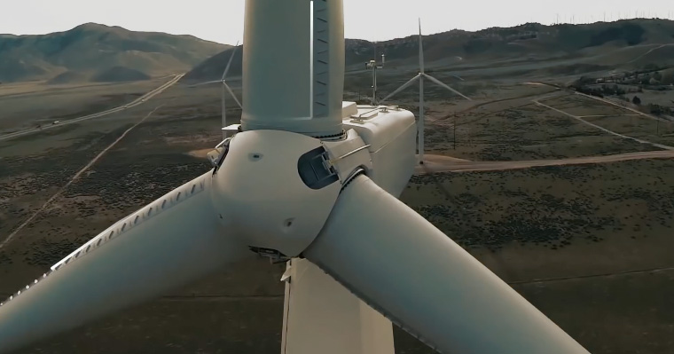

 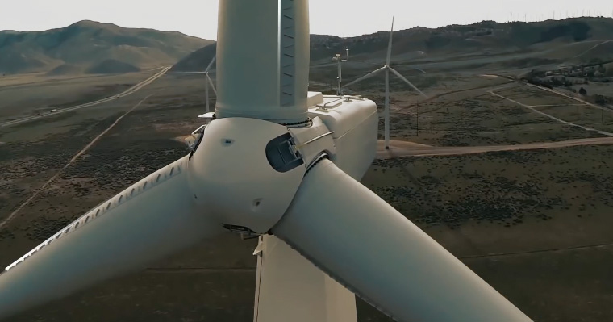
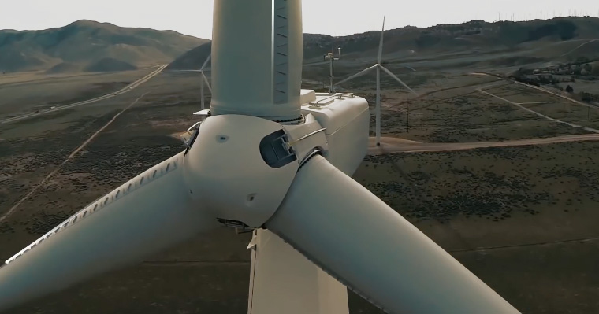


 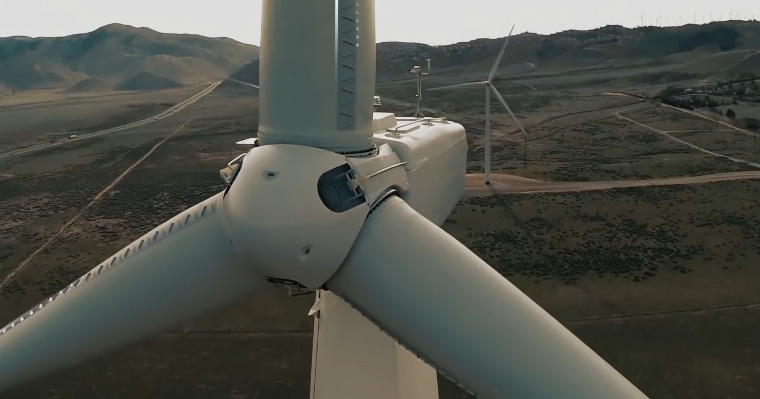
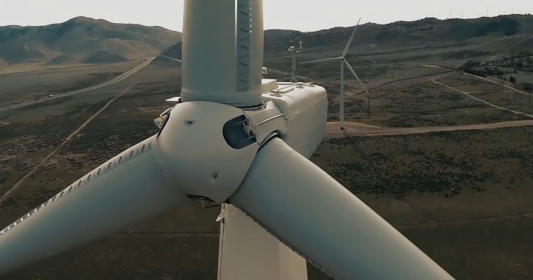


 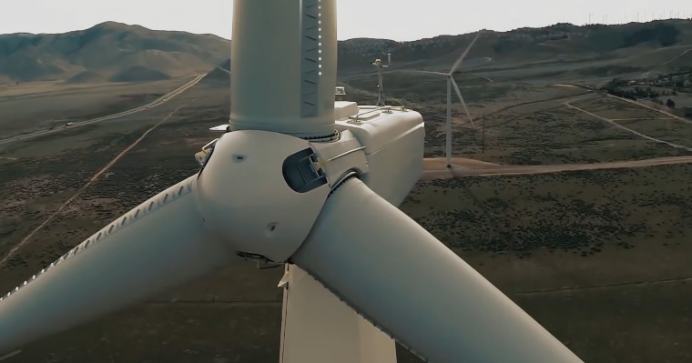
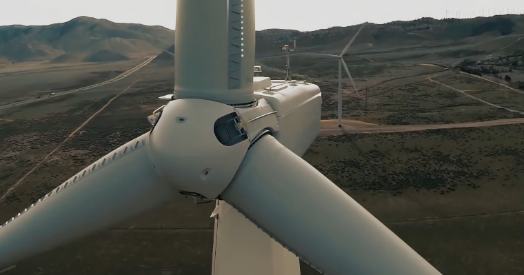


 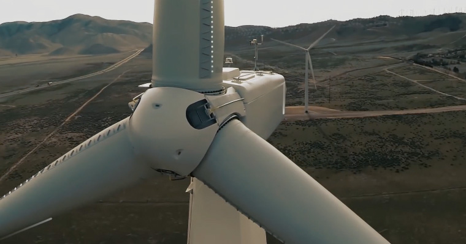
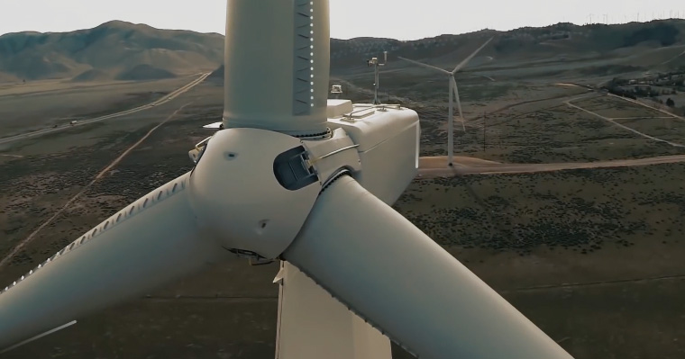

 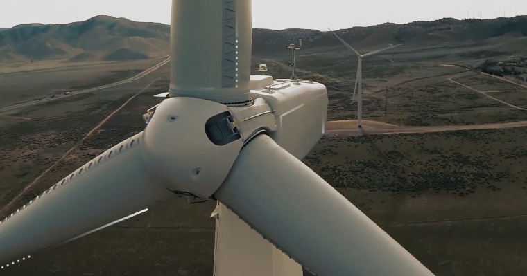
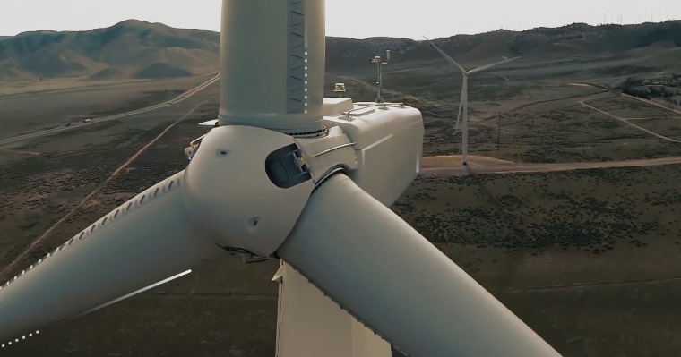

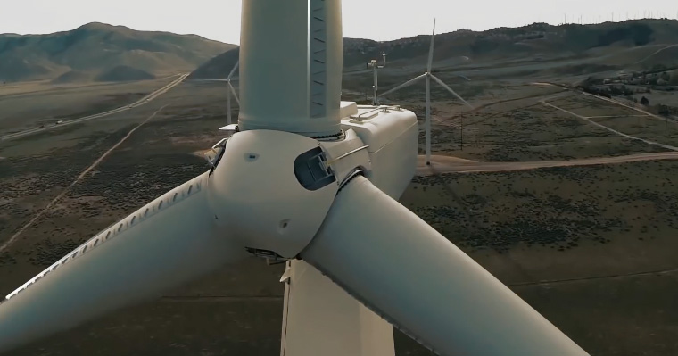
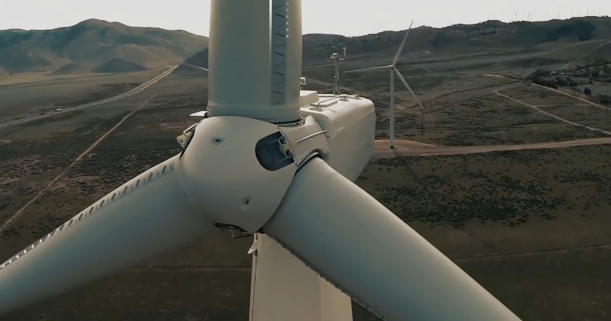
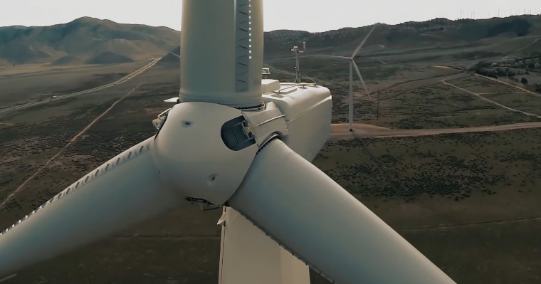
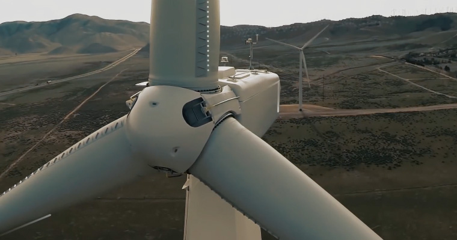
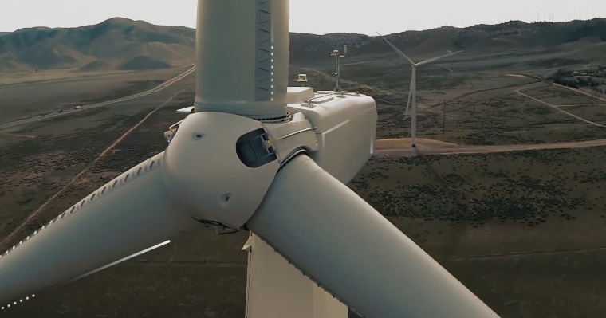
O aumento da velocidade da internet também teve um papel fundamental. Os sensores em operação geram uma enorme quantidade de dados e, com a conexão adequada, é possível transmitir a informação em larga escala, em tempo real, algo que não existia até há algum tempo.
O avanço de ferramentas de Big Data e de técnicas de análise de dados permite que hoje seja possível entender a gigantesca quantidade de dados gerada por dispositivos inteligentes.
Segundo o relatório Industrial Internet Insight Reports, da GE, 73% das companhias já estão investindo mais de 20% de seu orçamento em tecnologia para análise de Big Data.
Essa grande quantidade de dados também precisa ser armazenada, organizada e analisada, gerando a demanda por uma infraestrutura robusta. E é aí que entra a computação em nuvem. “As computações feitas por algoritmos que são baseados em Machine Learning (aprendizado de máquinas), quando feitas em larga escala, exigem um poder de processamento paralelo na nuvem”, destaca Blois. “Isso dá inteligência ao algoritmo, permitindo que a máquina reaja em tempo real”, completa.
Quando dispositivos conseguem escutar, sentir e reagir, pessoas conseguem trabalhar de um jeito mais eficiente. Máquinas inteligentes detectam problemas que um operador humano poderia deixar passar, o que permite que uma equipe previna problemas antes deles acontecerem.
Hoje, os sensores de um avião em voo
podem identificar que é preciso trocar uma peça antes do tempo previsto para a manutenção e se comunicar com técnicos no solo. Ao pousar, eles já estão preparados, evitando os atrasos decorrentes de uma manutenção não planejada e até pedindo a substituição da aeronave.
Estima-se que 10% de todos os cancelamentos e atrasos de voos ocorrem em função de manutenções não programadas, o que resulta em prejuízos anuais de cerca de US$ 8 bilhões para o setor mundial de aviação comercial. Somente nos Estados Unidos, acredita-se que seria possível evitar 60 mil atrasos e cancelamentos anuais, ajudando 7 milhões de passageiros a chegarem aos seus destinos na hora.
Dispositivos Inteligentes
Sensores captam dados em tempo real, monitorando a operação de equipamentos industriais.
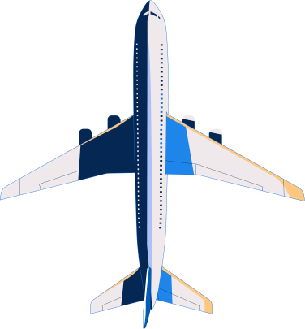Informação Inteligente
O grande volume de dados é armazenado, organizado e visualizado por meio de ferramentas de análise de dados.


Decisões Inteligentes
Gestores conseguem prever problemas antes deles acontecerem, garantindo que equipamentos funcionem no topo de sua eficiência.
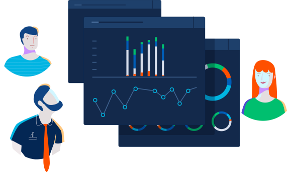
 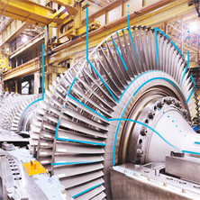
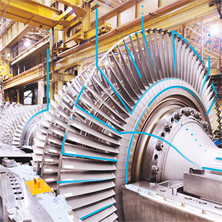
Informação inteligente
não significa a análise de dados de apenas uma máquina trabalhando isoladamente, mas de frotas inteiras interligadas pela internet e que podem ser ajustadas em tempo real. Os dados operacionais podem ser compartilhados entre as máquinas, frotas, redes ou pessoas, facilitando a colaboração e tornando as decisões mais eficientes.
O potencial de transformar as indústrias está atraindo o investimento de gigantes. Um deles é o governo alemão, que, como uma das principais iniciativas de estratégia para a década, decidiu investir no que eles chamam de Indústria 4.0. O objetivo é tornar o país líder europeu em manufatura digital.
No mesmo passo, a GE criou recentemente a unidade GE Digital, para reunir todas as capacidades digitais da empresa em uma única organização e consolidar sua estratégia de se tornar a maior companhia industrial digital no mundo.
Fábricas Inteligentes
O monitoramento da performance garante que os equipamentos funcionem no topo de sua produtividade


Desde a Revolução Industrial, a maioria das coisas que consumimos é manufaturada por máquinas. Nos últimos dois séculos, elas evoluíram, tornando-se mais rápidas, seguras, econômicas e produzindo mais com menos recursos.
Máquinas ganham vida dentro de fábricas, onde precisam funcionar como se fossem um único organismo em um sistema complexo de partes que precisam trabalhar juntas. Quando uma delas falha, uma linha de montagem inteira pode parar.
Os processos de operação e de manutenção melhoram constantemente e ajudam a estabelecer o tempo médio para a manutenção de equipamentos. Porém, a maioria dos dados é coletada por pessoas. Isto impõe restrições como a falta de tempo e de objetividade. Sem contar os riscos que um funcionário corre, ao tentar investigar um ruído fora do padrão em um maquinário.
Agora, as máquinas estão se tornando inteligentes e conseguem nos dizer o que nossos olhos não conseguem enxergar.
Isso permite que os gestores das plantas industriais tenham acesso à performance dos equipamentos de uma fábrica em tempo real, o que significa que uma máquina pode avisar que vai apresentar uma falha antes do prazo previsto de manutenção. São informações que ajudam a prever problemas com semanas e até mesmo meses de antecedência, evitando paradas na linha de montagem e garantindo que elas funcionem no topo de sua eficiência.

Essa tecnologia pode parecer algo que pertence a um futuro distante, mas ela já é realidade
A Gerdau implementou um projeto piloto de monitoramento digital de seus ativos, em uma iniciativa pioneira na indústria do aço no mundo todo.
A unidade GE Oil & Gas em Jandira (SP) automatizou o controle de inventário de ativos para reduzir o tempo de paralisação da fábrica.
Veja os cases abaixo


O Projeto Piloto
desenvolvido pela GE Digital para a Gerdau, contou com a instalação de 1,2 mil sensores em 50 equipamentos e já identificou dois problemas em potencial no maquinário. Eles foram solucionados com manutenção antecipada, evitando custos extras para a empresa.
Isso porque a manutenção preventiva evita que equipamentos falhem e fiquem parados por um grande tempo, aguardando a reposição de peças. “Essa espera pode durar meses, pois os equipamentos são, em geral, todos importados”, diz Soares, acrescentando que o monitoramento também permite evitar paradas para manutenção programadas, que podem ser desnecessárias.
“Apenas a economia com essas ações preventivas se igualou ao custo do projeto piloto, de mais de R$ 3 milhões”

Rodrigo Belloc Soares,
diretor industrial da Aços Brasil/Gerdau.
A consequência disso é que, agora, a Gerdau vai investir R$ 70 milhões, até o final de 2017, para instalar cerca de 30 mil sensores em 600 máquinas de 11 plantas no Brasil. A expectativa é que os investimentos feitos neste projeto se paguem em até dois anos com os benefícios gerados pelo sistema, segundo informa Soares.
Todos os dados gerados pelos equipamentos estão sendo monitorados por meio do Asset Performance Management (APM) - ou Gestão de Desempenho de Ativos - uma solução de monitoramento digital online desenvolvido pela GE Digital.
“O APM combina os softwares SmartSignal e Historian para prover serviços, monitoramento remoto e a expertise analítica da GE proveniente de seu Centro de Desempenho Industrial e Confiabilidade, em Illinois, nos EUA”
Rodrigo Belloc Soares
O SmartSignal identifica falhas de equipamento semanas e até meses antes que elas aconteçam, utilizando dados existentes, recolhidos e armazenados pelo Historian. Juntos, eles alertam sobre problemas iminentes nos equipamentos, permitindo que os operadores foquem em consertá-los, em vez de procurá-los.

Controle de inventário
Os benefícios da Internet Industrial para uma fábrica vão muito além da linha de produção e podem ser encontrados também em outras fases da manufatura, como, por exemplo, no controle de inventário e almoxarifado.
Em muitas fábricas, não só do Brasil, mas também da Europa e dos Estados Unidos, o processo de controle de inventário é feito manualmente. A fábrica precisa parar a produção e colocar a equipe para fazer a contagem peça a peça. Este processo tem diversas etapas e pode levar até uma semana para ser concluído.
“Como qualquer processo manual, esta contagem está sujeita a erros e às vezes é preciso repeti-lo uma segunda e até uma terceira vez”
Isela Bertran,
cientista senior na área de Software & Analytics do Centro de Pesquisas Global da GE.
Acrescente-se a isso a dificuldade para se mover algumas peças que pesam toneladas e ultrapassam os 8 metros de altura. Algumas fábricas nacionais chegam a ter um prejuízo de até US$ 750 mil por ano ao interromperem a produção para localizar e contar peças. Este número pode aumentar se o mercado estiver aquecido no período e a fábrica precisar ficar parada por dias sem produzir.
Para ajudar a reduzir o tempo de paralisação das fábricas e evitar o desperdício de recursos, o Centro de Pesquisas Global da GE, no Rio de Janeiro, desenvolveu um projeto para automatizar o controle de inventário de ativos.
“Você coloca em uma peça uma etiqueta que emite sinais que são captados por receptores em diversos pontos e, a partir disso, temos algoritmos para saber onde está aquela peça. Isto permite que a equipe consiga definir uma região da planta e saber, em tempo real, quantos ativos estão ali, sem a necessidade de deslocar pessoas e recursos para isso.”
Isela Bertran
O controle de inventário automatizado
foi implementado na unidade da GE Oil & Gas em Jandira (SP) e hoje permite o monitoramento e rastreamento, em tempo real, de 4 mil itens. Isso reduziu em 60% o tempo de inventário dos materiais em processo, economizando US$ 300 mil por ano.
Transporte Inteligente
Locomotivas conectadas estão transformando o transporte ferroviário


Mesmo sendo fundamental em nossas vidas, o transporte logístico é o tipo de coisa que só lembramos que existe quando ele deixa de funcionar corretamente. Quando isso acontece, alimentos podem estragar e fábricas podem ficar sem matéria-prima na hora certa, afetando a vida de milhões de pessoas.
Transporte é uma indústria com pequenas margens e o custo de investimentos, operação e manutenção do transporte ferroviário representa US$ 245 bilhões ao ano. Em outras palavras, cada por cento de economia de energia e tempo pode ter um grande impacto no lucro das empresas do setor.
No Brasil, temos alguns desafios extras. Aqui estão em atividade os trens mais pesados do mundo, responsáveis pelo transporte de minérios.
Imagine um trem com uma extensão aproximada de até 3 quilômetros, com uma carga equivalente a 500 Boeings 737, ou seja, cerca de 40 mil toneladas. Acrescente a isso um relevo acidentado, como a ligação entre Curitiba e o Porto de Paranaguá, no Paraná, que atravessa a Serra do Mar.
“Isso significa que, enquanto em alguns trechos uma parte do trem está descendo, outra parte está subindo. Enquanto uma das locomotivas deste trem está acelerando, a outra pode estar freando.”
Lucas Malta,
líder do Programa de Aviação e Transporte do Centro
de Pesquisas Global da GE no Brasil.
"Em termos práticos, estima-se que uma melhora de 1%, no que tange a velocidade da malha, o consumo de combustível e a melhoria da utilização, tanto das locomotivas, quanto dos vagões, traria um benefício de US$ 6 bilhões para a indústria ferroviária”, diz Malta. “É um grande desafio, mas também uma grande oportunidade”, completa.

Uma nova geração de locomotivas inteligentes
está transformando o transporte ferroviário, economizando combustível e gerando dados que resultam em eficiência. A locomotiva Evolution ES43BBi, fabricada pela GE na unidade de Contagem (MG), é um exemplo dessa nova geração.
“Ela conta com cerca de 250 sensores que capturam parâmetros internos, como o desempenho do motor e do escapamento, mistura do combustível, e também externos, como a condição da malha ferroviária. Ou seja, ela é inteligente porque além de ser eficiente, ela também se comunica e consegue se autodiagnosticar, identificando problemas e prevenindo falhas durante sua operação.”

Lucas Vargas,
Programa de Aviação e Transporte no Centro de Pesquisas Global da GE.
As 95 locomotivas Evolution ativas no país permitem que os trens estejam constantemente se comunicando, enviando e recebendo informações. Cada hora de operação da GE Evolution chega a enviar 9 milhões de dados, que são analisados em tempo real por produtos como o Trip Optimizer.
“Ele é como se fosse um piloto automático para trens de carga. Ele é o cérebro do trem, responsável por determinar o melhor perfil de aceleração e velocidade, com o objetivo de minimizar o tempo de viagem e o consumo de combustível.”
Carlos Gonzaga,
pesquisador de Controle de Sistemas do Centro de Pesquisas Global da GE.
Durante a viagem, esse perfil pode ser atualizado de acordo com as condições do ambiente, se houver algum desvio do perfil planejado ou se ocorrer algum evento não planejado.
Carolina Neves, pesquisadora do Programa de Aviação e Transporte do Centro de Pesquisas Global da GE, conta que, dependendo das características do relevo da rota, do peso do trem e de outros fatores, como a configuração do trem, o uso do Trip Optimizer pode resultar em uma economia de combustível que varia de 3% a 17%.
Predix
A plataforma de software da GE que permite que dados operacionais cheguem às pessoas certas, na hora certa


Com mais de 124 anos de experiência na construção de máquinas potentes, a GE está se reinventando como uma companhia industrial digital. O foco dessas mudanças está na nova unidade de negócios criada para reunir seus produtos digitais, a GE Digital.
Segundo Jeffrey Immelt, CEO da GE, o plano é que a unidade recém-criada - que teve um faturamento de US$ 6 bilhões em 2015 – se torne uma das 10 maiores companhias de software do mundo até 2020, quando a GE deverá processar 1 milhão de terabytes em dados por dia.

Mas como as diversas indústrias conseguem conectar e analisar dados de dispositivos tão distintos quanto motores de avião e plataformas de petróleo?
A resposta da GE Digital está no Predix, o sistema operacional industrial que conecta dispositivos e pessoas na nuvem, permitindo a troca de dados em escala industrial.
O Predix
é a plataforma de software que permite que dados coletados por sensores, nos dispositivos industriais, sejam armazenados e organizados na nuvem e possam ser acessados, em tempo real, por meio de aplicativos que mostram as informações operacionais para as pessoas certas, na hora certa.

Assim como o Android e o iOS são plataformas para se desenvolverem aplicativos para smartphones, o Predix é a plataforma para as indústrias desenvolverem aplicativos de um jeito simples e em um ambiente seguro.
Com essa ferramenta, as próprias empresas podem, de acordo com suas necessidades, criar aplicativos que podem ser acessados no computador da mesa de trabalho ou em um tablet, ou ainda em uma plataforma de petróleo, permitindo que gestores transformem dados operacionais em insights acionáveis em tempo real.
Todos os dias, a GE analisa...
- 50 milhões de elementos de dados de
-
10 milhões de sensores em ativos
administrados que valem - $1 trilhão
Até o início de 2017,
a GE irá...
- Criar 100 aplicativos GE.
- Ter 20.000 desenvolvedores (internos e externos) usando o Predix.
- Converter pelo menos US$500 milhões em aumento de produtividade para a empresa.
O fluxo de dados operacionais gerados pela indústria vem em diversos tipos e formatos. Eles podem ser estruturados, como a variação da temperatura de um equipamento, ou não estruturados, como o conteúdo de um vídeo.
O Predix coleta e armazena, na nuvem, os diversos dados industriais, criando relações complexas para que eles sejam organizados e analisados rapidamente.
Todo esse volume de dados industriais demanda novos padrões de segurança e é por isso que o Predix funciona em um novo tipo de nuvem, com protocolos de segurança e poder de processamento industriais. Ao contrário dos serviços de nuvem de acesso público, a nuvem do Predix funciona como um condomínio fechado, que só é acessado por clientes da GE que pertencem ao ecossistema industrial.
Entenda como funciona a plataforma Predix
1. Conectividade
Predix pode se conectar seguramente a máquinas equipadas com sensores, permitindo o envio de dados operacionais em tempo real.
2. Diversidade de dados
A plataforma também pode coletar e armazenar dados não estruturados, como o conteúdo de um vídeo ou de um e-mail.
3. Nuvem predix
A infraestrutura de nuvem de Predix atende às demandas de volume e segurança dos dados industriais.
4. Armazenamento
A plataforma coleta e armazena, na nuvem, os diversos tipos e formatos de dados industriais.
5. Organização e análise
Em seguida, Predix processa e interpreta o grande volume de dados, criando relações complexas para que eles sejam organizados e analisados rapidamente.
6. Aplicativos industriais
Desenvolvedores podem programar, testar e implementar aplicativos industriais em horas ou dias, permitindo que gestores monitorem e controlem a performance dos equipamentos a distância.
Impacto Econômico
A Internet Industrial está ajudando indústrias a reduzir custos

A GE estima que as inovações da Internet Industrial poderão ser aplicadas diretamente em setores que contabilizam mais de US$ 32,3 trilhões em atividade econômica. Conforme a economia global cresce, o potencial de aplicação da Internet Industrial também aumentará.
O Instituto Global McKinsey estima que a Internet das Coisas vai gerar entre US$ 3,4 e 11,4 trilhões anuais em valor econômico até 2025.
A Internet Industrial está transformando as indústrias, evitando desperdícios e reduzindo custos. Em uma visão conservadora, mesmo com somente 1% de melhoria na eficiência de cada setor, os resultados econômicos serão substanciais.
Poder do 1%
Exemplos ilustrativos baseados na economia potencial de 1% aplicados a setores específicos da indústria global
Fonte: Estimativas GE
Esta nova onda de inovação
vai mudar a maneira como trabalhamos, criando novas oportunidades e tornando nosso trabalho mais eficiente e mais gratificante.
Segundo Marco Annunziata, economista-chefe da GE:

“Nós passamos pela mecanização da agricultura e a automação da indústria e o resultado disso foi a criação de mais empregos. Isso porque a inovação disruptiva é fundamentalmente sobre crescimento: ela torna produtos mais acessíveis, cria novas demandas e novos empregos.”
Segundo o relatório do Fórum Econômico Mundial sobre o impacto econômico da Internet Industrial, as novas tecnologias vão ajudar a empoderar trabalhadores, e não substituí-los. A indústria digital vai redefinir os cargos atuais, tornando o trabalho mais eficiente para cargos de todos os níveis de habilidade, desde o gerente que consegue ter acesso a informações mais inteligentes para reorganizar o seu negócio, até mecânicos que conseguem visualizar dados, permitindo que eles entendam ainda mais sobre o funcionamento das máquinas.
O Fórum Econômico Mundial ouviu especialistas da indústria, e 52% deles acreditam que a Internet Industrial vai criar mais oportunidades - tanto em quantidade, quanto em qualidade - em vez de tirar empregos.

Estas novas oportunidades de trabalho vão quebrar barreiras entre as disciplinas tradicionais, gerando novas categorias que demandam habilidades multidisciplinares. Muitos dos novos cargos serão na área da tecnologia da informação, incluindo especialistas no desenvolvimento de softwares, análise de Big Data, integração de sistemas e segurança. A previsão da especialista em inovação da educação Cathy N. Davidson é que 65% das crianças de hoje irão trabalhar, no futuro, em uma carreira que ainda nem existe.
A indústria digital está aumentando a colaboração entre mentes e máquinas, começando a transformar a maneira como os diversos setores industriais operam. E talvez você ainda não saiba disso, mas ela vai mudar para sempre a forma como vivemos.
Acompanhe o que aconteceu no Minds + Machines
Clique e confira